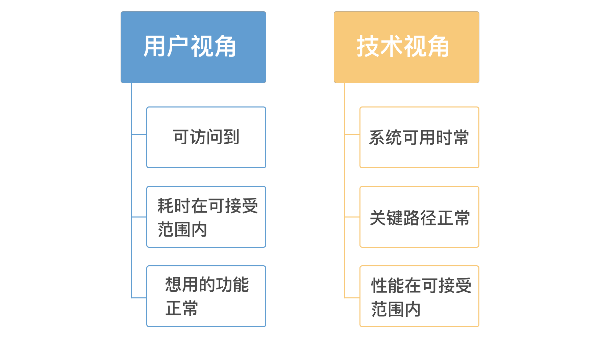
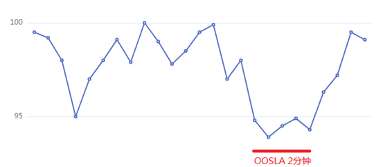
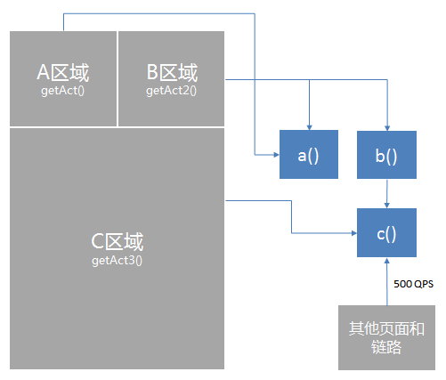
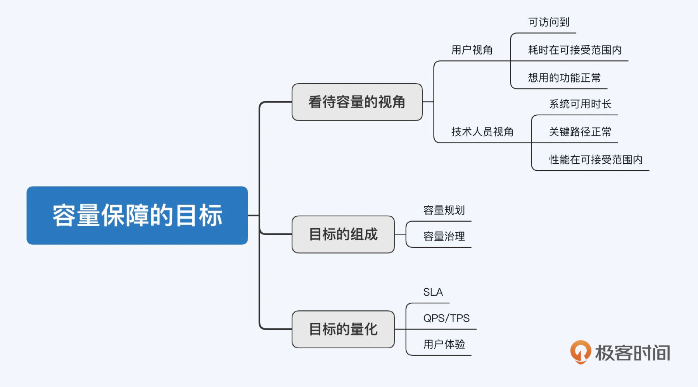

- 00 开篇词 互联网时代，人人肩负容量保障的职责.md
- 01 容量保障的目标：容量保障的目标是什么？该如何度量？.md
- 02 容量测试与验证：怎样科学实施容量测试？.md
- 03 容量指标分析经典5问：响应时间真的是越短越好吗？.md
- 04 容量治理的三板斧：扩容、限流与降级.md
- 05 全链路压测：系统整体容量保障的“核武器”（上）.md
- 06 全链路压测：系统整体容量保障的“核武器”（下）.md
- 07 工具进化：如何实现一个分布式压测平台.md
- 08 容量预测（上）：第三只眼，通过AI预测服务容量瓶颈.md
- 09 容量预测（下）：为不同服务“画像”，提升容量预测准确性.md
- 10 浅谈排队论：数学之美，通过建模计算容量.md
- 11 与时俱进：云原生下的容量保障新趋势.md
- 12 大促容量保障体系建设：怎样做好大促活动的容量保障工作（上）.md
- 13 大促容量保障体系建设：怎样做好大促活动的容量保障工作（下）.md
- 14 容量保障组织建设：容量保障需要什么样的团队？.md
- 15 小公司也能做好容量保障：建设经济实用型的容量保障体系.md
- 加餐 学习容量保障的那些经典资料.md
- 结束语 做时间的朋友，成功是持续累积而成的.md
01 容量保障的目标：容量保障的目标是什么？该如何度量？
你好，我是吴骏龙，欢迎和我一起学习容量保障。
俗话说万事开头难，在没有弄清楚目标和需求之前，很难进行容量保障，这就好比建筑图纸没有设计出来之前，你肯定不会开始砌墙。此外，不同角色看待容量的视角也是不一样的，对用户来说可能是想用的功能正常，访问速度快；而对技术人员来说，则是某个性能指标或可用性指标达到可靠的范围。

在今天这一讲中，我会着重和你讨论技术视角的目标，但同时也要明确，任何技术目标最终都是要体现到业务，也就是终端用户上的，脱离业务场景制定容量保障的目标，几乎肯定会跑偏。因为不同业务场景对于容量保障的要求是不一样的。
举一个极端的例子，如果我们面对的是企事业单位的某个内部系统，有着非常稳定的用户规模和几乎不变的产品功能，那么容量保障就是基于固定用户量的一次性保障工作。相反，如果是大型电商系统，业务场景有明显的流量峰值，且经常举办大促活动，容量保障就是一部“跌宕起伏的连续剧”。
容量保障的目标是什么？
那么，容量保障的目标究竟是什么呢？我们先来回答这个问题吧。
总结一下其实就两句话：
- 第一，以尽可能小的成本确保系统当前和未来的容量充足，即容量规划；
- 第二，解决已知的容量问题，预防未知的容量问题，即容量治理。
我们的这门课，就是围绕这两方面层层展开的。
你可以按这样的思路去理解容量保障的目标。首先，成本是容量保障的一个制约条件，容量保障不是无限保障，公司对服务器等IT资源的投入，对容量保障人力资源的投入等等，可能都会设置上限，这些都是成本上的约束。
在控制成本的基础上，我们要保障服务容量充足，即服务的各项资源消耗和业务指标保持在一个相对安全的范围内，这个范围可以是推算出来的，也可以是通过容量测试验证出来的，亦可以是真实流量体现出来的，我们将其称之为“安全水位”。
最后，分布式系统中充满了不确定性，网络可能抖三抖，硬盘可能崩一崩，我们一方面要尽可能在这种不可靠的环境下预防容量问题的发生，又要在出现容量问题时，有能力在短时间内消除影响，甚至是全自动的进行止损，这一点直接影响着服务可用性和用户体验。
做到了这些，容量保障的目标自然就达成了。
容量保障目标的量化
在明确了目标之后，我们需要拆解出一些具体的量化指标，以确保目标的有效达成。换言之，如果公司将容量保障的任务交给你来完成，你怎么证明自己的工作完成得好不好呢？
这时候，你就需要去量化目标，用数据说话。一个不能量化的目标，本身就是难以实施的目标，这也是为何我们在制定各种目标时都建议输出度量指标的原因，关键结果是由量化指标的形式呈现的。
那么，容量保障工作中有哪些关键的量化指标呢？
1. 服务等级协议（SLA）
通俗地说，SLA就是对服务可用性的一个保证，它可以细分为SLI和SLO。其中，SLI定义测量的具体指标，如QPS、带宽等；SLO定义服务提供功能的期望状态，如QPS 99线≤100ms。
SLA用一个简单的公式来描述就是：SLA = SLO + 后果。 这里的后果指的是不满足SLO情况下的补偿协议，比如赔款、延长使用期，等等。
可用性是互联网系统提供服务的根本，因此用SLA作为容量保障目标的量化指标也是非常常见的。当然，不止是容量问题，有很多因素都有可能影响SLA，比如：线上漏测的Bug、网络抖动、服务器断电等等，因此需要识别出影响SLA的容量问题，再判断是否满足目标。
举个具体的例子，我们要求系统整体可用性SLA为4个9（99.99%），即每年不可用时长≤52.56分钟（1年：8760小时 × 0.0001 = 52.56分钟）。
基于这个整体SLA要求，并综合考虑历年容量问题对服务可用性的影响比例（比如占比为1/5），最终设定容量问题造成的可用性损失不高于10分钟（52.26 / 5≈10分钟），这就是一个明确的目标，基于这个目标拆解策略是可衡量的。
不过，虽然SLA是一个很好的指标，但也是众所周知的易量化、难测量。
举个例子，有一项SLA承诺了团队将在24小时内解决用户上报的问题，但它却没有讲清楚如果客户没有提供足够的信息，反复沟通的时间如何计算？24小时是否包含这些时间？这些信息是必须要落实的，但其实很少有团队能将SLA描述细化到这个程度。因此，很多SLA的制定其实是不太切合实际的，我们应该用尽可能浅显易懂的语言，围绕业务或用户的实际需求，制定能测量、能理解、有效的SLA。
上面说了一个反面教材，我针对容量保障工作再给你一个优秀的案例吧。
如下图所示，我们将交易链路下单接口的成功率≥95%作为SLA的一部分，并且承诺低于该成功率的时长不超过1分钟，这就是一个容易理解且可测量的SLA，通过对下单接口的监控就可以观测。交易链路的容量问题有导致下单成功率下跌的可能性，因此作为容量保障的目标也是合理的。

注释：图中OOSLA = Out of SLA，指不满足SLA的时段
2. QPS/TPS
第二个关键的量化指标，QPS/TPS，我们先来复习一下它们的含义：
- QPS（Queries per Second）指的是每秒查询率，是一台服务器每秒能够响应的查询次数，即1秒内完成的请求数量，一般针对读请求居多。
- TPS（Transactions per Second）指的是每秒处理的事务数，一般针对写请求居多。
如果你觉得不够形象，可以想象一下百度的搜索页面，假设我们将这个页面的展示过程视为是一个事务，每秒对这个页面的请求就形成了TPS，其中可能包含对若干页面内请求的QPS，即1TPS＝多QPS。如果我们只是请求一个静态页面，页面加载不包含其他查询请求，那么这里TPS和QPS就是对等的，即1TPS＝1QPS。
QPS/TPS是容量保障目标中最常见的指标，我们通常说“系统容量是否足够”，一般就是指系统或服务能否在可接受的响应时间和成功率下支撑目标QPS/TPS。
不过在实际工作中，我们有时可能无法直接给出QPS/TPS的目标值，比如说，针对某个将要上线的大促活动，业务方预估的活动热度往往是以业务指标的形式呈现的，如PV（Page View）、UV（Unique View）、DAU（Daily Active User）等，我们需要将其转换为QPS/TPS，才能作为容量保障可实施的技术目标。
为了加深理解，我来出一道应用题。
这里有一个活动页面，页面上分为A、B和C三个区域，进入页面分别调用getAct()、getAct2()和getAct3()接口各一次，这些接口的调用链路又会涉及a()、b()、c()三个接口，调用关系如图所示。这时，如果业务运营方给到这个页面在活动期间（1天）的总PV预估是1000万，求a()接口的预估QPS是多少？

首先，1000万PV是分布在整个活动期间的，但不一定是均匀分布的。假设我们根据二八原则，也就是80%的PV分布在20%的时间内，4.8小时中将有800万PV，平均每秒463PV。
由于进入该页面（1次PV）对应getAct()和getAct2()接口各调用一次，那么对a()接口的调用总共就是2次，我们可以得出a()接口的预估QPS为926，这就是该接口在活动期间的容量保障目标。
总结一下，不论是计算QPS还是TPS，首先需要对服务调用链路非常熟悉，梳理出调用关系，最好能够形成类似上面例子中的调用关系图，这样会更清晰易读；其次，虽然针对页面入口的流量是等比例调用的，但根据上述例子我们也看到了，1次PV转换到a()接口变成了2次调用，这意味着对下游服务的调用量很有可能会被放大，这些扩散比是需要重点计算的；最后，如果是针对局部活动的流量预估，还需要考虑到接口在其他链路上的背景流量，也需要一并计算在内，例子中的c()接口就存在这样的背景流量。
如果你感兴趣的话可以计算一下，对于c()接口的预估QPS应该是多少呢？
再多说一句，传统的互联网服务大多是计算密集型的，即并发量较大的类型，QPS/TPS和响应时间比较适合作为容量目标。而对于数据存储型的服务，比如某些大数据服务，吞吐量和磁盘IO是比较合适的目标，因为这种类型的服务对计算量的要求不大，主要瓶颈在数据传输的速度上，具体你可以看这篇文章，解释比较全面了。可见，制定目标是要因地制宜的。
3. 用户体验
第三个关键指标是用户体验。有些容量问题尽管没有影响可用性，但会导致用户操作时响应延迟，页面打开缓慢等体验问题。想象一下，你工作了一天下班回到家，躺在床上打开某个电商App准备看一下有什么新品上市，结果每浏览一个商品详情页都会卡上好几秒，你会是啥心情呢？
其实，我们都希望系统始终能够为用户提供平稳、快速的用户体验，不仅要“可用”，还要“用得爽”。因此，用户体验完全可以作为容量保障更高级的目标。将用户体验做到极致，是咱们每个互联网技术人员都应该铭记的初心。
不过，用户体验问题的定性是相对困难的，一种手段是将客户投诉或内测版本反馈作为一个维度去跟踪。另外，绝大多数用户体验是可以与系统指标或业务指标挂钩的，这些指标就可以作为目标的一部分。比如，有用户反馈某个操作等待时间特别长，其涉及的接口背后的服务器CPU利用率、内存利用率、响应时间、调用的消息队列延迟等信息，就都可以作为参考维度。
总结
今天这一节课，我首先介绍了不同人群看待互联网服务容量的视角区别，并明确了从技术视角出发，结合业务场景的思路。
接下来，我重点解释了容量保障的目标，你可以将其拆解为容量规划和容量治理两部分。前者考虑在成本的约束下，将系统资源规划到最优水位；后者则主要致力于容量问题的事前防治和事后止损。
最后，我详细展开了容量保障目标的量化方式和指标选取，分别就SLA、QPS/TPS和用户体验三方面进行了阐述。SLA是基于服务可用性的视角来量化容量保障目标的，QPS/TPS则是以服务处理能力作为容量保障的度量维度，用户体验是最高级的度量指标，直接以用户的感受作为容量目标。
技术指标联系业务场景，量化目标结合用户体验，是我想传达的核心思想。 产品是做出来给人用的，容量保障的终极目的，也是竭尽所能给用户提供流畅的产品体验。互联网业务的快速发展对容量保障提出了越来越高的要求，今天制定的目标也许很快就会跟不上明天的发展方向，用户体验就是一个典型例子，直到今天都很少有人将其作为容量保障的目标，但它恰恰是一个产品的核心竞争力。我们应该以动态的眼光看待容量目标，不断精益求精，更好地服务用户。-

课后讨论
在“QPS/TPS”小节中，我留了一个小问题，你可以计算一下c()接口的预估QPS是多少，注意考虑清楚所有的请求来源。欢迎你给我留言，也欢迎分享给更多的朋友一起阅读。
© 2019 - 2023 Liangliang Lee. Powered by gin and hexo-theme-book.